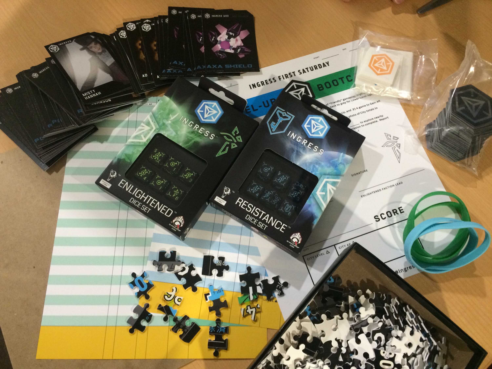

先日公開した部員手帳Ver2.0が早くもバージョンアップいたしました！
相模原クロスファクション・ボランティアの皆さんのチェックに加え、白井先生の初心者向け用語集への監修とデザイン・レイアウトが入り、全ページ大幅強化されたVer2.1になりました！


PDF版は以下になります。
こちらは印刷版です。A3両面印刷を推奨します！
IngressBookletV2.1forPrint
なお、オフセット印刷へ入稿しております。原稿に特に問題がなければ（かつ大雪の影響などなければ）、「春よ来い！相模Ingress豆まき！」で配布できると思います。お楽しみに！
本日、エントリー最終日ですよ！

公式グッズ到着…開封の儀！
ついに、ついに、届きましたよIngressFS公式グッズ！
はるばるテキサスのGoogle，Niantic Labs社から届きました。
NianticからXM溢れるパワーキューブが届きました！#ingress #FS #相模原 pic.twitter.com/9Bib7ZXdon
— 相模Ingress部 (@ingressbu) February 2, 2015

まずはFaction Leader（両陣営のリーダー）用のTシャツ。

結果発表用＆公式撮影用のバナー（巨大な旗）、

そしてグッズ類です。

公式レポートもあります、こちらに代表者が署名するようです。
ルールについても書かれていますが、いたってシンプルです。

アイテムコードが裏側に書かれたカードです。新アイテムAXAシールドのほかには登場人物のキャラクターカードもあります。
登録された人全員に行き渡るように運営したい！と思います、ともかく登録をお勧めいたします！
そしてフライヤー（初版）第2版が完成しました！

セブンイレブンのネットプリントで 23993363で印刷できます。お近くの初心者さんに是非！2/10まで印刷できます。
そして再三のお願いですが、受付URLは http://j.mp/sgmFS0207 です！2/2夜現在で50名、アイテムの総数からすると、おそらくあと20名ぐらいで締め切ることになると思います！
☆当日の飛び込みは、ＡＰを記録する関係上、受け付けられませんのでお早めにお申し込みください！
公式FSイベント，第2報です
Ingress公式Cross Faction First Saturdayイベントに採択された「相模原Ingress豆まき～初心者育成競争～(仮)」ですがその後，一晩のハングアウト（HO）での交流や，関係者の準備により，無事開催する流れになりました。
相模Ingress部G+: http://goo.gl/jdm8ff
相模Ingress部G+内イベントページ: http://goo.gl/a2rA4p
※このイベントは仮登録・参加表明・交流用であり，実際のエントリーフォームは2015/1/25以降にこちらのページにて公開予定です．
https://kaitas.github.io/sagami-ingress/ifsk-100-sagamihara/
【仮の決定事項】
・2015/2/7 10時集合
・両陣営混ざった初心者育成イベント
・集合場所はJR横浜線の淵野辺駅を予定
【仮の日程】
10時～12時 受付・交流会
12時～14時 ブートキャンプ(新人育成)
14時～15時 集計・結果発表
運営スタッフHOにて行われた議事録を共有します．
・タイトル（未だ仮）
「相模原Ingress豆まき～初心者育成競争～(仮)」 IFSK-100 #IngressFS
Webアクセスログから分析すると「豆まき」で検索してくる人も居るようですのでアリでは
「豆まき」は初心者育成として，せっかくなので種まき的な意味合いを込めたデザインで
次の会場と事業内容とも関係すると思います．
・会場/事業内容
（実行委員会で調査・設定中）
・参加登録
事務局側で先日開催された千葉でのFSを参考にGoogle Formでエントリーフォームを作ります．公開は(最速でも)週末～月曜予定．
撮影許可や保険の扱いはチェックボックスで確認
イベント登録時とAP集計時は別のフォームに登録する予定
もちろん短縮URLやQRコードは用意します．
・集計方式
事務局としてはGoogleフォームに集計係を複数人用意、スプレッドシートに自動集計がよいのでは
バックアップとして前回の初詣イベントで使用した時のExcelを用意
・体制
実行委員会(イベント主催者)
スマ歩さがみはらプロジェクト(相模原市立博物館+神奈川工科大学白井研究室)
博物館（担当 木村知之）公園利用申請等の市役所関連調整，博物解説．
白井研究室
小瀬由樹：Webサイトとツイッター/サイネージへの展開，登録者の個人情報管理
白井准教授：Google本体との連絡，企画責任者，司会
企画委員(各パートのディレクター)
IngressFS企画パート(敬称略 G+/Agent名入り混じっておりますが，整理のため)
担当：育成パートのルール設計，下見会への参加，実行委員会への要望取りまとめ
青側の幹事：Miwa Komatsu
スタッフ：kuusuke nyan，マスク・ド・和尚，Yoshiharu Hirose，tos geo
緑側の幹事：新条拓那，RosenKnight(副幹事)
スタッフ：shell，Hayabusa Itokawa，Phase6，KOBAYASHI Hideto，私です
以下の担当，その他ご担当いただける方歓迎です
ビジュアル(コンペした方がいいかも)
グッズ配布の管理
受付誘導
記録(ブログ運営している人歓迎)
・当日のプログラム
10時～12時 受付・交流会
12時～14時 ブートキャンプ(新人育成)
14時～15時 集計・結果発表
上記をベースに進めていきますが，以下詳細
第1部
鹿沼公園や博物館でのトークライブ第2部から参加，などまだ可能性があると思いますのでこの部分の企画は引き続き募集中
第2部
前回のFSイベントを経験している方にそれを参考に進行役やグループ分け，ルール設計をお願いしたいところです．
参考URL： https://kaitas.github.io/sagami-ingress/2015/01/03/event-hatumoude_rule/
第3部
司会は白井先生に任せたほうがいいと思います．前回は発表集計からスライドまでの流れがキツかったので，館内見学などのイベントが第2部と第3部の間に入ると落ち着いて運営できると思います。
スライドの中に相模Ingress部の活動や卒論の紹介，今後の可能性など，共有させていただければ幸いです．
記念写真を忘れずに．記念写真やショートインタビューへの協力も．
・ゴールの共有
1．エージェントの顔合わせ(地域密着に力点を置きたい)
2．博物(相模Ingress部)の活動の周知や今後の施策
3．育成世界ランキング上位を目指す
今週末，1/25(日)淵野辺駅近辺でキックオフミーティングにて，下見をしたうえで，FS開催場所について決定する予定です．
よろしくお願いいたします．
小瀬が卒論でテンパってるなか，どうにか実現できそうです．
ご協力いただける皆さん，ありがとうございます！！

なぜ相模Ingress部は研究で、相模原市立博物館の活動なのか
相模Ingress部は、Ingressを楽しくプレイする部活動…ではありますが、実はれっきとした神奈川工科大学情報学部情報メディア学科白井研究室の研究であり、相模原市および相模原市立博物館と協働事業として2年がかりで進めてきた事業であります。
こちらにSlide Shareプレゼンテーションを共有します。
http://www.slideshare.net/aquihiko/ingress-42896142
博物館ネットワーク事業：
Ingressを用いた フィールドミュージアムの開発
神奈川工科大学 情報学部 情報メディア学科 白井研究室 小瀬 由樹，美濃部 久美子，木村 知之，白井 暁彦
【補足】
神奈川工科大学白井研究室と相模原市立博物館の協働事業として，相模原市立博物館情報ネットワークセンター事業『みんな でつくる相模原「知的探求散策アルバム」』 (通称：スマ歩さがみはら) みんなでつくる相模原「知的探求アルバム」というプロジェクトがあります．
数年来のテーマであった「津久井エリアを含め，広くなった相模原市．この市域全域をミュージアムにすることはできないか？」という市政側からの要求に，神奈川工科大学の学生と先生で取り組む，協働事業なのです．
平成25年度の協働事業による調査で2000人を対象としたアンケートを実施したところ「 若者世代の来館者が少ないこと」がわかりました．
向井優善，美濃部久美子，小出雄空明，田所康隆，白井暁彦: “博物館ネットワーク事業：相模原市立博物館にはどんな人が来ているか “, 相模原市立博物館 学びの収穫祭 2013, 2013年11月16日.
家族やお年寄りにもアプローチしつつ，パブリックミュージアムの弱点「中高生」，この層をねらいたい！
若者世代に地域の博物への 興味・刺激を与えるきっかけを作るには！？
ということで，調査研究，独自アプリやサービス開発や，展示物開発や写真ワークショップ，「はやぶさの日」応援企画，地元紹介動画地図など様々な活動を通して本活動の課題と方法を明らかにしていきました。
その活動の一角に「相模Ingress部」があります。Google発のベンチャー企業 Niantic Labsが運営する代替現実ゲームであり，我々のプロジェクトとほぼ同時期に開始しています．当時はAndroidだけであり，またUIが英語のみという障壁があり（博物館の多くのお客さんは子供とお年寄りなのです！），独自アプリの開発という方向性で検討していましたが，神社，史跡，ローカルビジネス （ポータル）を使った陣取りゲーム，しかも世界規模で社会実験が行えている点が有利な点でした（我々は初期にGoogle+をつかっていましたが，個人の扱いや仕様変更が多すぎて継続利用には難がありました：「スマ歩さがみはら Google+」）． Ingressには「スマ歩さがみはら」がターゲットとしていた自然や風景は含まれていませんし，XMという未知のエネルギー，SFが含まれていますが，担当の学芸員・木村知之さんが次第にこの世界観を受け入れてくれることにより，より多くの人々が「Ingress部」の活動に参加してくれています．これは主担当の学生・小瀬さんによる「相模とか，部活動とかちょっとダサいほうが参加しやすくていい」というコンセプトが生きていると思います．
先行事例として宮城県石巻市の事例が実施されていたことも我々を勇気づけました．ポータルを利用した名所説明する石川県金沢市 「ビューティーホクリク」なども素晴らしいと思います．
本格的に活動を介した時点で相模原市内にはすでに 700程度のポータルが存在しているました（現在はローソンポータルのおかげでさらに増えています）．このプレゼンテーションでは相模原市のポータル数，オススメ探訪エリア（相模大野，原当麻，小田急相模原，相武台下 ，淵野辺，原当麻エリア）などを実際に足で調査したり，配布物「相模Ingress部員手帳」として配布したりしています．
「世界で最も濃いセル」と言われるPA01-ALPHA-12において、「相模原」は中心にあります。 "Ingress界の東京の中心は相模原"と言っても過言では無いでしょう。 異論は認めます！ http://t.co/tYb1ieKz8w pic.twitter.com/qsp8x4Ps3B
— 相模Ingress部 (@ingressbu) December 20, 2014
ちなみに相模原市立博物館には我々よりももっと先に，ボランティアの街歩き「民俗調査会」が探訪会を実施しています．普段触れることのない”上の世代”，つまりパソコンとかスマートフォンとかを使わない人々との交流や，博物館の展示物である「一遍上人」が祀られる「時宗当麻山無量光寺」や，「狸菩薩」などはすでに親しみがある観光資源（＝知的探求を刺激するターゲット）でした．岡本太郎作「赤い手・青い手」，「県立相模原公園」や「相模大野北口のコリドー街商店街」の銅像などもアートポータルとして紹介されるにつれ，あまり興味がなかった銅像や，神社の鳥居にも詳しくなっていきます．また地元の青勢（お察しの通り，相模Ingress部はなぜか緑が多いです）が強いエリア，例えば上溝エリアやその周辺にあるまるで中高生が立ち上げたかのようなネーミングのポータル群から，そこに生きる人々の様子なども肌で感じられるようになりました． 横山公園にある「芭蕉句碑」というポータルでは，実際に芭蕉の句碑があり，達筆すぎる書で読むことができないのですが，

ポータルの解説に 「陽炎や 柴胡の原の 薄ぐもり」とあり，「柴胡の原」というキーワードから，博物館で活動する「カワラノギクを守る会」（カワラノギクは相模原エリアに咲く絶滅危惧種IB類）のページの一角にであったりと，確実に市域全域をフィールドにした，かつ世代を超えたフィールドミュージアムが体現できていることを感じております（ご高齢の活動者が多いのでHPを維持し続けるのは本当に大変なのです！）
Ingressの動作を乱す太陽フレアについて，天文の学芸員さんとTwitterで絡んだりもします．こんなことは2年前の相模原市立博物館ではありえないレベルのネットワーク活動だと思います．
@ingressbu @scm_sagapon このフレアに伴うＣＭＥが地球方向には放出されていないかもしれませんが、もし地球方向に出ているとすると２，３日後に要注意になると思います。 参考 http://t.co/ipYlVFFX0y
— 山田陽志郎 Yoshiro Yamada (@sinus_iridium) December 20, 2014
最近ではやっとMissionsが使えるようになり（そのためにL9まで必死になってレベル上げていた経緯も…），にこにこ星ふちのべ商店街と連携したMissionsなどもさっそく立ち上げ，商店街やプレイしていただいた方から反響をいただいております．そして2015/1/4の初詣イベントにつながります．
Missionsの公開にも快くご協力いただいた「にこにこ星ふちのべ商店街」さん製作のYouTube動画「HAPPY」 http://t.co/TYIXS8LJJT
— 相模Ingress部 (@ingressbu) December 20, 2014
ローカルINGRESS部か…ゲームの特性からすると地元密着型もよいね。地域開拓にもなるし。探せば厚木近辺もなんかあったりするのかなあこういうの。: 相模Ingerss部 | 潤水都市をXMで満たせ！ http://t.co/TkLY2nKHpR
— かじき＠神奈川 (@kajiki_m) December 20, 2014
https://twitter.com/kogure/status/545773959602388993
卒論としては，この活動を支える技術，例えばまだ現れていないポータルを 先んじてBlogで紹介する技術，Wordpress用のマップ表示プラグイン「photomapper」や，各種SNS（Twitter，Facebook，Google+）との連携技術，運用テクニックの確立，その軸になる「スマ歩“相模Ingress部”さがみはら」作成（ちなみに相模原市立博物館のサイトも白井研究室が開発し，運営軌道に乗せるところまでお手伝いしております）．配布物，

そしてIngressと多重化技術，クラウド技術を使ったサイネージへの展開などが予定されています．ハイカーなどが多い緑区で，デジタルサイネージとWifiスポット，充電などの「ITオアシス」を今年度中に整備していきます（残念ながら，本事業は今年度をもって終了する予定です）．
スマ歩さがみはら:ふちのべIngress初詣。相模原私立博物館のデジタルサイネージでも宣伝させてもらってます！ #Ingress http://t.co/dWAmWf7tsH
— 相模Ingress部 (@ingressbu) December 20, 2014
これらすべてが，研究なのです．情報メディア分野とフィールドミュージアムの研究．
最先端の技術と，人の動きに注目したIT分野の研究です．
小瀬君は頑張ってこの卒論を完成させなければ卒業できません．
（エンタテイメントシステムを研究する白井研究室のそのほかの論文リストはこちらから）
そんなわけで，みなさま，今後とも応援よろしくお願いいたします！
相模Ingress部 世話人 白井暁彦(akilabo:L9)
最後にもう一度宣伝：初詣イベント，ご参加ください！（参加登録は12/30まで）
2015/1/4初詣Ingressイベントの集合場所です／「はやぶさ2を、相模原から宇宙へ。日本の未来はここにある。」日本宇宙少年財団理事長 松本零士／「ムッタとヒビトとともに宇宙に想いをはせよう！」宇宙兄弟×さがみはら pic.twitter.com/GBFZ2AtYKe
— 相模Ingress部 (@ingressbu) December 19, 2014

相模原は東京の中央!?／相模Ingress部オリジナルMissions
2014年10月5日に公開された新機能MISSIONS、これはIngressのポータルを使って独自の冒険を作り出すことができる機能です。
すでにこのサイトでも紹介したとおり、上級プレイヤーに作成機能のテストおよびより幅広いプレイヤーへの公開が始まっており、これを目指してレベル上げに勤しんでいたのでした（一時期忘れていましたが・・・）。
ところで、相模Ingress部がフィールドにしている「PA-01-ALPHA-12」って いうセル（Ingress界の区分）の中央にいるんですね。
スキャナーアプリの上部「INTEL」から「REGIONAL SCORES」を見ると自分のいる位置が表示されます。ついでに自分のランキングも「SEE OTHER AGENTS」で表示できます。

もっとがんばらねば！
特定の地名がどこのセルなのかはこのサイトで調べることができます。
http://ingress-cells.appspot.com/?q=sagamihara

ほら、世界で最も濃いセルのひとつ、の、ど真ん中に相模原はあります。つまりこのセルにおいて「相模原は関が原」、「相模原は東京の中央」なのです！強エージェントさん、巨大なCFなどを張りたいなら、広大な相模原にぜひ！異論は認めます！
さて、軽く荒ぶったところで、相模Ingress部が作成したMissionsの紹介です。
https://twitter.com/ingressbu/status/545904757051629568 https://twitter.com/ingressbu/status/545905593945313281
昨日、Twitterで紹介した「にこにこ星ふちのべ商店街」（商店街監修済！）に加えて、「横山公園」、「はじめてのCF」、「Save “Hayabusa”!!」の合計4件を本日採択確認しました。

しかもすでにクリアした人も8人居るみたい。私は2番目でした！

Save “Hayabusa”!!【相模Ingress部】新田（しんでん）稲荷神社と境内にある呼ばわり山（今熊（いまくま）神社）がいま、静かに注目を集めている。小惑星探査機「はやぶさ」が消息を絶った際、当時はやぶさのリーダーを務めていた川口淳一郎JAXA教授が「発見祈願」に毎夜訪れ、その後発見されて感動の帰還を果たしたからだ。知的探究心でXMパワースポットを訪れよう！
「Save “Hayabusa”!!」はJAXA内もルートに入っており、見学必須（臨時休館日の案内が掲載されていない場合は、土日祝日問わず9時45分～17時30分の時間帯で見学可）。 途中にクイズも設定されており難度高いです（クイズも英語対応）。
最後はもちろん、我らがIngress部の本籍地・相模原市立博物館がゴールです！
これで初詣イベントでこれを使って遊べますね！クリアすると部謹製バッジももらえます。
まだまだ至らないことも多いと思いますので、改善ご意見あればTwitterまでお寄せください。
というわけで「スマ歩さがみはら：ふちのべIngress初詣」参加者募集中です。定員充足もしくは12/30ごろ締め切ります。
相模Ingress部Darsana小隊 活動レポート
リアルタイムではこちら
告知！
ingressbu: 相模Ingress部は初詣イベントの実施を決定しました！ 日付は1月4日。初心者参加者と両陣営のボランティアを募集予定です。詳細は後日発表いたします。よろしくお願いします！ #Ingress
— 相模Ingress部 (@ingressbu) December 13, 2014
Ingressの開発者、ジョン・ハンケ氏と記念写真を撮影して頂きました！ #darsanaTokyo #ingress pic.twitter.com/SQy7oAt5BQ
— 相模Ingress部 (@ingressbu) December 13, 2014
相模Ingress部と 部活動に興味ある方は 有楽町で逢いましょう。 明日の朝、9:00ごろ、 集合場所である日比谷野外音楽堂にポータル巡りながら集合します！ #ingress #darsanatokyo
— 相模Ingress部 (@ingressbu) December 12, 2014
相模Ingress部 部員手帳Ver.1.00 ローソンポータルアノマリー以前の多重化マップ入り。 明日名刺代わりに配布しますね pic.twitter.com/GaBaiy4HMU
— 相模Ingress部 (@ingressbu) December 12, 2014
相模Ingress部、作戦準備中です。 分析の結果、明日は恵比寿ガーデンプレイスから開始し、観光しながら進撃予定です！ #darsanatokyo #ingress pic.twitter.com/un61X5fM0v
— 相模Ingress部 (@ingressbu) December 12, 2014
こんばんは
Ingressの開発者、ジョン・ハンケ氏と記念写真を撮影して頂きました！ #darsanaTokyo #ingress pic.twitter.com/SQy7oAt5BQ
— 相模Ingress部 (@ingressbu) December 13, 2014
アフターパーティーのVJ/DJを担当された真鍋大渡さんと。 Ingress開発APIを使用してリアルタイムでIngressの世界とパーティー会場をフュージョン、カッコよかったです！ 年末も某歌合戦でお忙しいと思いますが頑張って！ pic.twitter.com/9AlitpkU1L
— 相模Ingress部 (@ingressbu) December 13, 2014
Darsana小隊のPostmotemです。 カレー食べながら新年の「相模原初詣アノマリー(仮)」の企画会議や珍ポータル交換会など。 #ingress #DarsanaTokyo pic.twitter.com/ERgWhppvxP
— 相模Ingress部 (@ingressbu) December 13, 2014
その他素晴らしい写真たち。
相模Ingress部「Darsana小隊」結成！
みなさんこんにちは！
2014/12/13(土)、きたるXM異常現象「Darsana東京」に向け、
相模Ingress部では以下の活動を予定しています。・部員の連絡手段の確保（ハングアウト「相模Ingress部Darsana小隊」立ち上げ）
・特製腕章の貸し出し(Tシャツやパーカーでは寒いので)
・部員手帳の配布
・ポストモーテム(事後振り返り，という名の交流会)の実施
・moves(iPhone,android)による歩行経路の記録
・集合場所の共有
・イベントの記録
・初詣イベントの模索(イベントを作れる人が出来たらなおよし)などを考えております。
また、部員の定義などがあいまいなので、今回の小隊のみの参加ということでも歓迎です。
ハングアウトに参加希望の方はGoogleアカウントをメール「ingressbu at shirai.la」やTwitter@ingressbu までDMでお送りください。
活動にご参加いただける方も募集しております。
興味のある方はTwitter@ingressbu宛にDMをお願いいたします。以上です！今後の情報はこちらのページに追記していきます！
（企画：エージェントglolo）

全国のローソンがポータル化！？ Ingress世界に異変
2014年11月15日
私達が「学びの収穫祭」で「Ingressを用いたフィールドミュージアムの開発」の発表をしていた日。その裏でIngress世界にとんでもない異変が起こっていました。
それは全国のローソンのポータル化。
スキャナーに突如現れたロゴ。思わず動揺してしまいました。
そしてポータルの解説が意外としっかりしている。これには笑ってしまいました。
この件に関して相模Ingress部としては、地域の史跡等の紹介に活用している以上、あまり歓迎できる事態ではないかも知れません…。
しかし、この出来事は確実にIngressの知名度も上がりますし、プレイ環境は格段に良くなります。
つまり、エージェントが増えるのです。
そういった人たちに相模Ingress部の存在を知らせていければ…悪いことばかりでは決してないと思います。ピンチと思うよりはチャンスと思ったほうが良いの精神でがんばって行きたいところ。
以上です。

L9以上を目指す。難関!? Guardianメダル取得への道
おはようございます！
相模Ingress部女子部員のdenryuです。よろしくおねがいします！
さて先日、L8になると何が見えるのか？にてちらりと説明されていましたが、
L9以上になるには一定の経験値の他にメダルの取得枚数が関わってきます。
ちなみに、L9になるにはシルバーが4、ゴールドが1必要ですが、
ゴールドを1枚取るとシルバーも1枚取ったことになるようで、実質取らなければならない枚数はシルバーが3枚とゴールドが1枚です。さて、タイトルのGuardianメダル、具体的に言うと『自分がオーナーのポータルを守りきれ！』です。
何故難関か、というと
・自分がオーナーかつ、1つ以上自分のレゾネーターが刺さっている必要がある
・その上で、3日以上保持しなければならないというところ。
つまり、仮に敵に攻撃されて壊されたりしなくても、味方のアップデートで自分のレゾネーターが無くなったらオシマイというわけです。
となると、必然的にL8プレイヤーが有利になってくるわけですが…。
しかも現在はキャンペーン期間！壊したりアップデートしたり盛んなので、この期間にメダルの取得は難しいか、と思われました
しかし！
https://twitter.com/denryu_KAIT/status/532384038305034240
何とか取得にこぎつける事が出来ました～！
取得に当たって気を付けなければならないことは、
- 周辺に対象ポータルに対して思い入れの深い人がいるか否か？
- 重要ポータルであるか？
- 夜の間に壊される可能性があるか？
- ポータルキーは持ったか！？
- シールドは張ったか！？
ポータルが少ないから、多いから、と安心してはいけません。重要なのはポータルの数よりプレイヤーの数！思い入れの深い敵L8プレイヤーが居て、シールドをブチ破ってこられたらおしまいです。
夜間に近寄れないポータル(仏閣等)を昼間に強化しておき、夜の破壊を防ぐのも一つの手。お墓のある仏閣は夜間の侵入は恐ろしいですしね。
味方の友人などに協力してもらい、シールド4枚仕込んでみたりするのも有効です。
それから、これは主観ですが、あまりそのポータルからリンクを張りすぎると「なにあれ、うまそう」というプレイヤーが壊しにかかってくることも…。
そんなプレイヤー達に対抗するために、ポータルキーを持っておくことは必須です。
しかも、レゾネータ―は時間経過によって消耗します！定期的にその場所へ行けないのであれば、なおさらポータルキーが出るまで粘りましょう。
iOS版でも攻撃通知を設定できるようになったので、いくらか守りやすくなってると思います。
実際に私が守りきったポータルは、多重リンクの末端かつ、近くに味方の友人が住んでいて、シールド4枚積み。
画像にもありますが、最後のメダルを取るまでに、現在守っているポータルを半年近く保持しなければなりません…。遠い道のりです。
L9以上を目指すのであれば、ハッキングの回数だとか、敵のレゾネーターを壊した回数だとか、レゾネーターを刺した回数だとか…他にも簡単(？)に達成できるメダルはあります。…その話はまた、別の時にでも。
以上で報告を終了します！
L8になると、何が見えるのか？
最近、2周年キャンペーン中ということもあり、Ingress部でもちらほらL8（レベル8）に到達するプレイヤーが増えてきました。
L8はかつてのバージョンでの最高位でした。
部会において「IngressプレイヤーがL8になると何が見えるのか？」を定義してみましたので以下，つぶやきでまとめます。
過疎地Ingress民でも頑張ればL7いける これでそろそろ幼稚園卒業できるかな？ L1胎児 L2産声をあげる L3四つ足で移動:初XMP発砲 L4二足歩行:初ポータル浄化 L5親なし歩行:初CF L6遠足:初多重 こんな感じ pic.twitter.com/1Jc6GDHrEd
— Akihiko SHIRAI, Ph.D (@o_ob) October 31, 2014
L6幼稚園児年少 他者のCFを見ると「うまそう」という L7幼稚園年中 おもちゃをみんなで使えるようになる。 ファームを覚え、効率よくレベル挙げられる、同じプレイヤーとコミュニケーションを取れるようになる。 L8小学一年生 戦略をたてて戦うことができる。 #ingress
— Akihiko SHIRAI, Ph.D (@o_ob) October 31, 2014
https://twitter.com/iku_arino/status/528112053379035137
ちなみにL7→L8に必要なAP（経験値）が1,200,000APです。
L8→L9に必要なAPが2,400,000AP，加えて金メダル1枚と銀メダル3枚が必要だそうです。
1 hacking当たり100APとか、大き目のCFつくって5000APぐらいですから…。
絶望･･･そこに一筋の希望があるかぎり･･･エージェントはがんばります！
%d人のブロガーが「いいね」をつけました。


{kind=link}
{kind=link}
{kind=link}
{kind=link}
{kind=link}
{kind=link}
{kind=link}
{kind=link}
{kind=link}
{kind=link}
{kind=link}